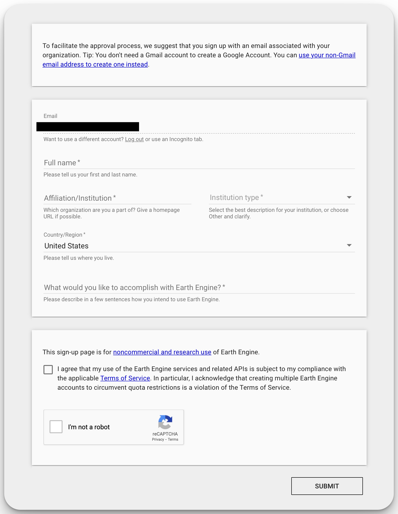
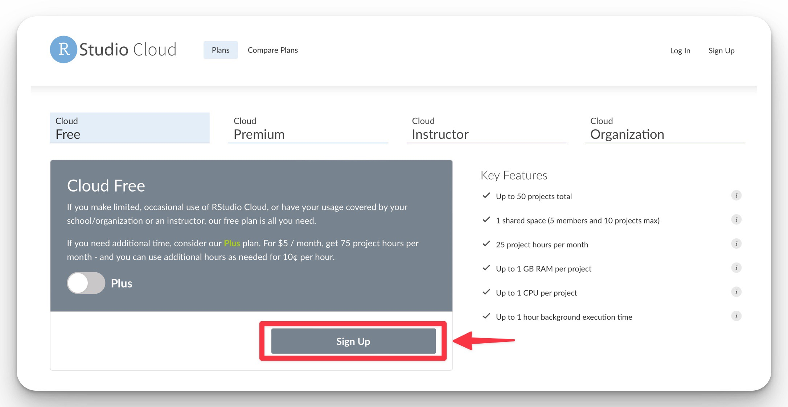
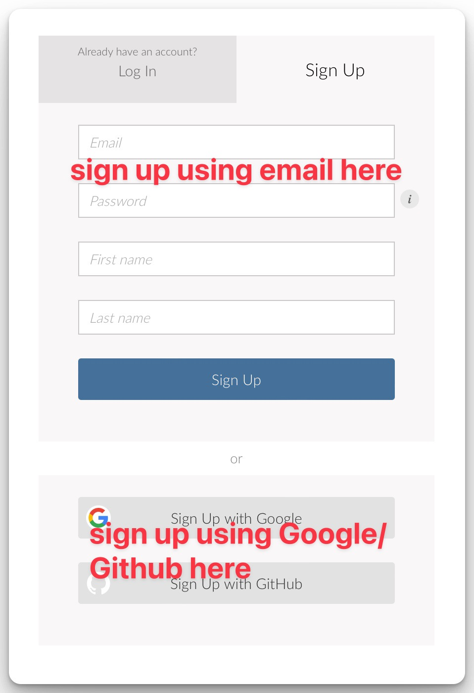

Setting up R
Google Earth Engine
To use Google Earth Engine, you must link an existing Google acccount to the service. Click here, follow the instructions to log in (or create a Google Account, if you do not already have one). Eventually, you will be asked to fill in a web form.
Make sure to fill in the form with genuine answers. In the section asking “What would you like to accomplish with Earth Engine?”, provide a reasonable explanation of how you would utilise the geospatial data obtained from Earth Engine in a couple of sentences. A proper description will almost guarantee that you will be approved in minutes.

Once you have submitted, you should receive a confirmation via email within minutes (to a couple of hours). This is why signing up now is important - you may not be able to use Google Earth Engine functionality if you sign up during the workshop.
RStudio Cloud
RStudio Cloud is a free, web-based RStudio IDE that you can use to run R code in your browser. It is a great way to get started with R without having to install anything on your computer. You can also use it to share your code with others. We encourage you to use RStudio Cloud for the workshop as you do not need to install anything on your computer. If you do not have an RStudio account, follow the steps below.
Setting up RStudio Cloud
Go to https://rstudio.cloud/ and sign up on the “Cloud Free” Plan.

You will need to provide an email address and a password. You can also sign up using your Google or Github account – simply click on those buttons, and follow the authentication steps.

You will be automatically directed to the RStudio Cloud home page, which looks like this:

The shared space will be activated closer to the workshop date.
Need help?
If you are stuck at any point, we have a dedicated Troubleshooting section that you can refer to. This section will be updated as we receive more questions.
What’s next?
Now that you have dataharvester iwnstalled, you are ready to start the workshop. Workshop links are available in the sidebar. You should also check out the landing page for the R Workshop for updates.